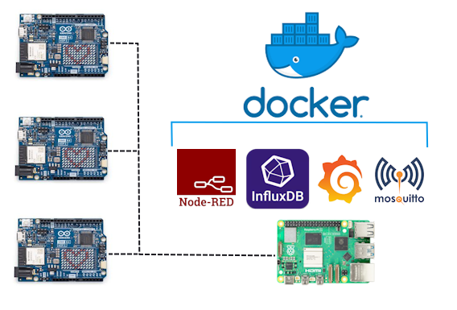

3D Web Rendering
This little beauty is the product of two tech marvels: the WebGL JavaScript API which allows for the rendering of interactive
2D & 3D graphics without plugins, and Three.js library which greatly simplifies the 3D part of that equation.
While this isn't anything revolutionary (in fact it's the basic tutorial for using Three.js), it's new and incredibly exciting to me.
Isn't it neat?
Edge Computing & MQTT Security
Hi Everyone! Sorry it's been a while since my last post. I've been focused on my college capstone assignment. Speaking of, let's talk about Edge Computing and the internet of things.
Back in the late 2000's, Cloud Computing hit the mainstream and realized a dream that had begun back in the 1960's with enterprise level mainframes. The rapid ascent of
software, platforms, and even infrastructure as a service meant that developing enterprise scale systems and applications was now available to everyone; professionals and hobbyists alike.
However as time has passed and global data usage on these systems spans into the zettabytes, new concerns have arisen. How can we quickly access and process data on a cloud server from
half a world away? How can we keep that data secure in the face of annual data breaches? How can we take back scalable systems and sensitive data from the hands of global corporations
and put it back in the hands of users?
In my latest project, I've been exploring these questions from a secure software development perspective using Arduino boards and a software stack including Eclipse Mosquitto, IBM's Node
RED, InfluxDB, and Grafana. I also got to reinforce some of the skills from my previous Web Application Security work using network analysis tools like Wireshark and OpenSSL.

Web Application Security and OWASP Juice Shop
Once you've learned the foundational principles of software developement, learning cybersecurity can seem like starting a daunting task all over again.
However, now more than ever there are incredible reseources for the self taught. Over this last semester, I had a software security assignment that was
perhaps one of my favorite projects of all time. The OWASP Juice Shop project is an interactive learning tool designed to help students of software security
flex their hacker skills in a safe environment. In a practical sense, the Juice Shop is a fully functional store front and web application running locally on your machine.
The catch is that this web application does everything wrong security wise. Therefore it's your job to exploit and document as many vulnerabilities as you can.
I think the freedom, interactivity, and critical thinking involved in this exercise really set it above others of the same ilk, and with it being developed by the OWASP
organization, you can be sure that they know what they're talking about.
I won't post my entire report here (since that rather negates the assignments purpose), but
I wholeheartedly recommend it to fellow learners.
Concurrency in C
One of the main reasons that older languages like C remain so popular is their ability to interface with the system at an incredibly low level.
From manipulating byte code in memory to system kernel calls, C is a language about efficiency over simplicity. Some of the best instances of this
are Parallelism and Concurrency. While not unique to C by any means, the ability to perform operations concurrently across multiple processor cores
is an incredibly important tool for developers, especially in the graphics rendering pipeline.
Check out my developer log video below to learn more!
3D Web Rendering
This little beauty is the product of two tech marvels: the WebGL JavaScript API which allows for the rendering of interactive
2D & 3D graphics without plugins, and Three.js library which greatly simplifies the 3D part of that equation.
While this isn't anything revolutionary (in fact it's the basic tutorial for using Three.js), it's new and incredibly exciting to me.
Isn't it neat?